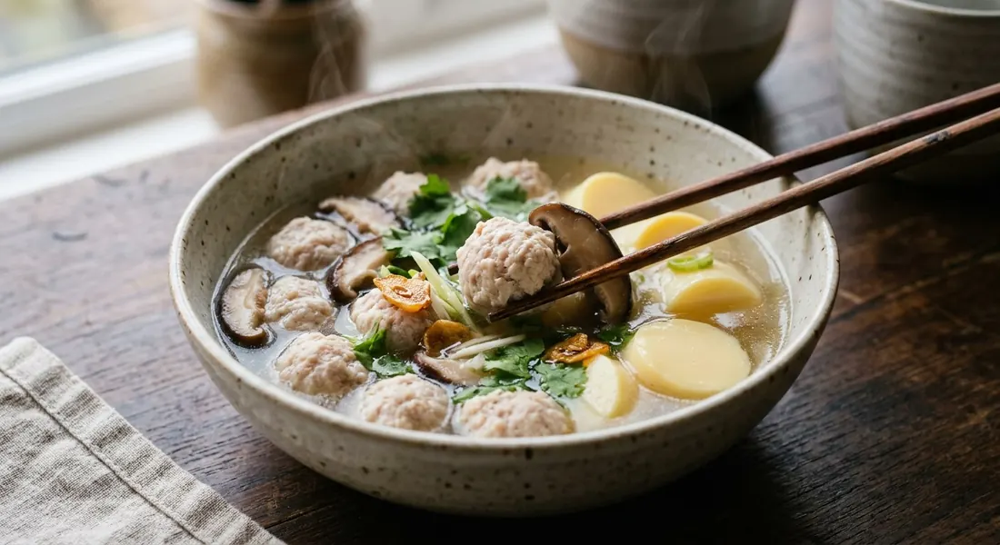

The Thai table's gentle counterpart to tom yum — bouncy pork balls, silky egg tofu and a broth that earns its name: ต้มจืด, the bland soup, clear as water and quietly sweet.

ต้มจืด — literally "boiled bland" — is the balancing dish of a Thai meal: the calm pot next to the chilli heat. But its blandness is a technical achievement, not an absence of cooking. Kapook's recipe (from Pantip member เที่ยวสบายสบาย) names the two secrets: ice-cold water kneaded into the pork, a spoonful at a time until the meat turns sticky, which is what keeps the balls soft and springy; and the shiitake soaking water, strained into the pot for a golden, naturally sweet broth no sugar could imitate.
The pork goes into water at a rolling boil — as Kapook explains, boiling water is what makes loosely-shaped balls hold together — and then the skimming begins. Every source skims: the white foam that rises off the pork is fat and protein that would cloud the broth, and a clear ต้มจืด is judged on exactly that clarity.
The tofu's timing is the other point of technique. Bloggang's ชาลี passes on her mother's rule: egg tofu goes in last, and the heat is cut at once — a hard boil makes the tubes collapse and fill with air bubbles. The soup is finished at the table as often as in the pot: her family pours seasoning sauce into the bottom of each bowl first, and a commenter on the post adds the folk rule — clear soups are seasoned in the pot, tom yum is seasoned in the bowl.
| Thai | English | Amount |
|---|---|---|
| หมูสับ | Minced pork | 200–300 g |
| ซีอิ๊วขาว น้ำมันหอย พริกไทยป่น น้ำตาลทรายเล็กน้อย | Light soy, oyster sauce, ground pepper, a little sugar (marinade) | to season |
| น้ำเย็นจัด | Ice-cold water (for kneading) | 1 tbsp per 100 g pork |
| เห็ดหอมแห้งแช่น้ำจนนิ่ม | Dried shiitake, soaked until soft | 8–9 |
| น้ำแช่เห็ดหอม | Shiitake soaking water, strained | keep it |
| เต้าหู้ไข่ | Egg tofu (tubes) | 4 |
| ซีอิ๊วขาว | Light soy sauce (for the soup) | to season |
| น้ำตาลกรวดก้อนเล็ก | Rock sugar, small lump | 1 |
| ผักชีและต้นหอม | Coriander and spring onion, to garnish | a handful |
The selling batch (Aroifin): 400 g minced pork marinated in oyster sauce, mushroom soy, cold water, sugar and pepper with 100 g of glass noodles kneaded in; 1.5 L stock, 3 bruised garlic cloves, 1 coriander root, 5 soaked shiitake, 40 g white cabbage, carrot, 360 g egg tofu. The garlic pot (Wongnai): 500 g pork marinated with salt, seasoning powder and chopped garlic, cooked with 2 tbsp sam kler paste, a soup cube, 5 fresh shiitake and 3 egg tofu tubes. The minimalist bowl (TrueID): salt, pepper, MSG and about a tablespoon of fish sauce — no soy at all.
The pork. Kapook kneads ice-cold water into the meat. Aroifin's selling batch kneads in 100 g of glass noodles with the cold water — noodles make the batch go further and keep the balls soft. Wongnai marinates with salt, seasoning powder and chopped garlic. TrueID keeps it to salt, pepper and water.
The seasoning. Soy and oyster sauce (Kapook, Aroifin), Maggi seasoning sauce and oyster sauce (Maggi Thailand's brand recipe), a soup cube (Wongnai), or nothing but MSG and a spoon of fish sauce (TrueID's minimalist bowl). Bloggang's family skips the pot entirely and seasons the bottom of each serving bowl.
The sweet. Rock sugar for a "clean" finish-sweetness (Kapook), plain sugar in the pot (Aroifin, Maggi by way of oyster sauce), or none at all (TrueID, Bloggang).
The mushrooms. Dried shiitake with their soaking water (Kapook, Aroifin), fresh shiitake (Wongnai), or no mushrooms (TrueID, Maggi, Bloggang).
The tofu's heat. Bloggang's mother cuts the heat the moment the tofu goes in — a hard boil makes egg tofu collapse and fill with air bubbles. Maggi lets it come back to the boil once. Both agree it goes in last, never first.
This recipe is translated from the following Thai-language sources. Where they disagree, we've said so.
1. Kapook — "ต้มจืดเต้าหู้หมูสับเห็ดหอม สูตรน้ำซุปใส หอมหวาน หมูนุ่ม เต้าหู้ละมุน" by Pantip member เที่ยวสบายสบาย (the recipe used here) — cooking.kapook.com
2. Aroifin — "วิธีทำ ต้มจืดเต้าหู้หมูสับ เคล็ดลับน้ำซุปใส หมูสับนุ่ม" (the selling batch with glass noodles) — aroifin.com
3. Wongnai — Pipatpong Promchan, "ต้มจืดเต้าหู้หมูสับ" (the garlic-forward family pot) — wongnai.com
4. Bloggang — ชาลี, "แกงจืดเต้าหู้หมูสับ" (the mother's tofu rule and bowl-bottom seasoning) — bloggang.com
5. TrueID Food — 345Pink, "แจกสูตรเมนูทำง่าย ต้มจืดเต้าหู้หมูสับ หมูนุ่ม ซุปร้อน เข้มข้น หอมผักขึ้นฉ่าย" (the minimalist bowl) — food.trueid.net
6. Maggi Thailand — "ต้มจืดเต้าหู้หมูสับ วิธีทำ ต้มจืดหมูสับ รสชาติกลมกล่อม ทำตามง่าย" (the brand recipe) — maggi.co.th